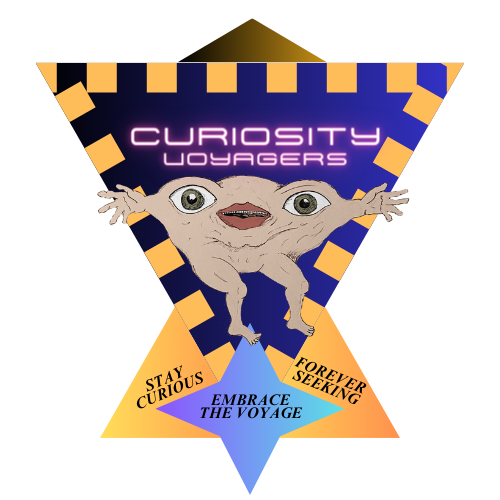
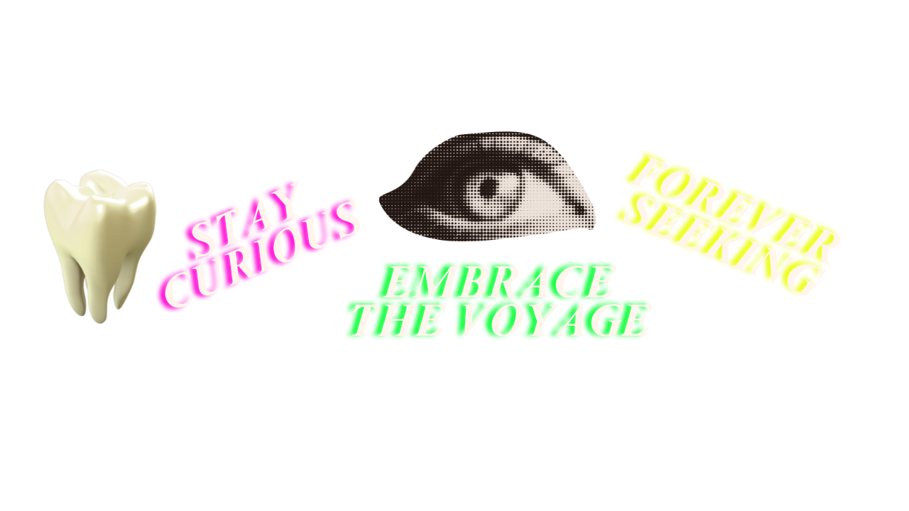
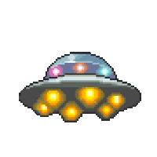
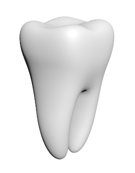

The Department of Curiosity commendds the curiosity, seeking, and voyaging of the Curiosity Voyager -- the ideal form. Upon completion of the questions, you are a Curiosity Voyager, embracin the the values of the department: FOREVER SEEKING, EMBRACE THE VOYAGE, and STAY CURIOUS. Incoming Transmission7.29.26 Hi everyone. Recently, the Curiosity Voyagers became unexpectedly mini-viral in the Stranger Things fandom. I am not in any way associated with Stranger Things, the Duffer brothers, Netflix, etc. This started as an inside joke among friends back in August 2022; I’d come up with increasingly wild stuff just to shock them. The KitKat question started as a mishearing and we decided it was the initiation question. I was nervous to put it out there and didn’t until 2023 with the Major Tom video. I always have been self-conscious about my work, especially with original projects, but the Voyagers were the first spark of creativity after a long drought. I had completely forgotten about Dustin saying “curiosity voyage” in Stranger Things, having only seen the second season once or twice, until I watched the scene in 2023 and it bummed me. I felt like I subconsciously ripped it off and I was worried that viewers would think that, too. I still wanted to make the Curiosity Voyagers into an internet mystery, and worked hard to keep the two entities as separate as possible. Evidently, I didn’t do a great job. Sadly, with the conformity gate speculation, that all came crashing down. My original project was being attributed to what I had so desperately avoided. My passion died. I made the videos private due to the overwhelming response, harassment, constant Stranger Things-related messages, and speculation, all with the pressure to stay in character while also defending my work. It’s too much. My dream of creating something cryptic, goofy, a little unhinged, and mysterious fell apart as the worst case scenario became evident: I’d have to break character for my own wellbeing. Here we are. Stranger Things is a special show to me. As unique of a fan experience as it is to be caught up in a conspiracy theory about it (I mean, what?!?), my relationship with the series and mental health suffering for it. I don’t like feeling soured to a favorite show or having negative associations with it. I’m glad the fanbase is active, but please understand I am not a clue to anything bigger. I’m guessing some of you will take this as a another clue, but I swear on my life, I have no ties. As fans of the same show, please let me have peace and my love of the show back. I’m sorry I gave you hope and sent you on a wild goose chase. It wasn’t ever meant to be that. I’m not a conformity gate believer; Season 5 was almost certainly the end, barring spin offs. I hated what they did with El and it wasn’t perfect as a whole, but it could’ve been worse. You’re creative, impressive sleuths. All of my creative decisions were done arbitrarily for my own amusement. You thought them through more than I did and found connections I’d never have thought of. I’m amazed you even found the accounts. I honestly didn’t think the Voyagers were going to take off, hence why the website launched before it was finished. It breaks my heart to have to break character/the 4th wall. I absolutely wanted it to be found and met with confusion… but not in this way. It’s been a lot to handle: anxiety, discomfort, artistic apathy. I had so much excitement to create again mid-2025, finally making more videos and launching the website. I even began months of work on the QRCT radio station after years of ideation, only to have ST come back and have The Squawk, among other references that overlapped ideas I had. Then came all this: brakes majorly slammed. I’ve debated going totally private, but I don’t want to let this get in the way of my passion. I want to make more weird chaos for y’all without it being analyzed for clues, because it's stifled and paralyzed my fire to work on this. It took me forever to get back into a creative groove and with enough confidence to put it out for an audience, and this has been disheartening for me because it makes me want to keep my art to myself going forward. The phrase Curiosity Voyager wasn’t even used until the animated spin-off (which I haven’t seen yet). At the end of the day, I’m just an analogue horror fan/creator. Please respect my wishes, mental health, and creativity as an artist and let me have my project. If you’re a content creator who has perpetuated this, please let your followers know this is confirmedly not part of Stranger Things, but if you can, be mindful and help me return the voyager lore to its intended mysterious vibes I so desperately wanted to keep before having to regrettably step forward. Thank you for reading and for understanding. Stay safe. Be good to each other. Stay curious and forever seeking, but not in this wild way. ;) Sincerely, The Curiosity Captain/creator Join UsWhat Are You Seeking?
|